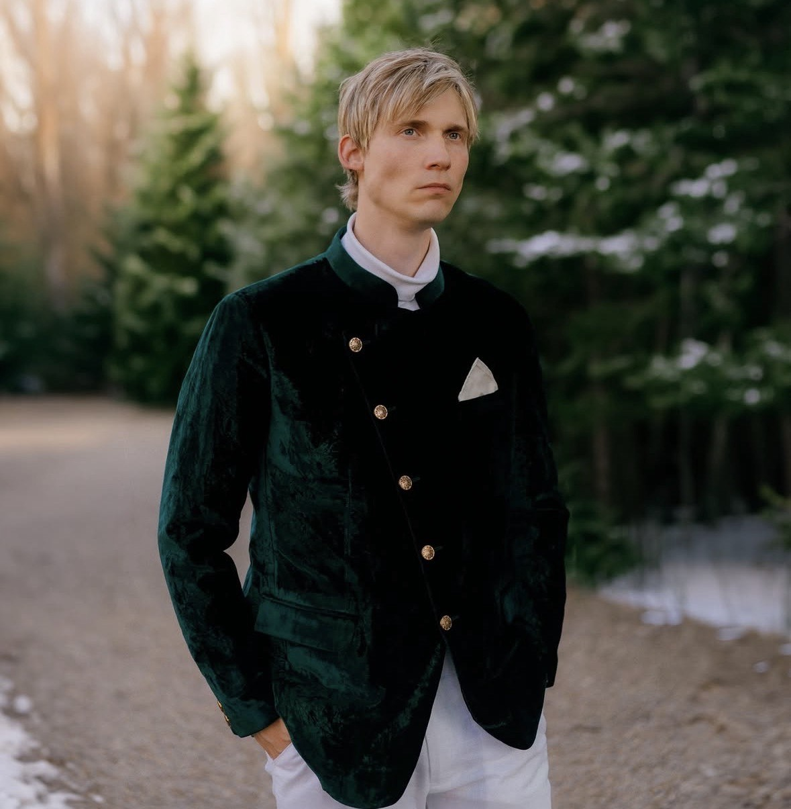
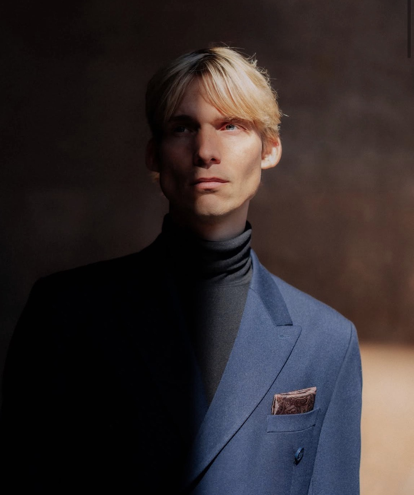

»Forlægger søges til Danmarks største digtertalent siden Yahya Hassan«
— Kontrast

Emil Salzer er en af de mest omdiskuterede stemmer i dansk poesi. Med tre digtsamlinger, syv foredrag og en plads som Berlingskes husdigter har han sat sig et aftryk, der ikke kan ignoreres.
Litteraturhistoriker Marianne Stidsen har kaldt ham »det største naturtalent på dansk de sidste ti år.«

Den første samling. Digte om censur, identitetspolitik og covid-tidens ufølsomhed.
Læs mere →Anden samling. Skarpe digte om det danske samfunds underkastelse og tab af rygrad.
Læs mere →Tredje samling. Poesi der borer ind i sjælens sygdomme og kulturens forfald.
Læs mere →»Det største naturtalent på dansk de sidste ti år.«
— Marianne Stidsen, litteraturhistoriker
Fast digter på Berlingskes platforme siden efteråret 2025.
Inviteret til at »sprænge rammerne« — men det blev for voldsomt for kommunen.
Jurymedlem i DR-serien Folkedomstolen, januar 2026.
Bestillingsværk: digt der skulle inspirere den unge generations åndelige mobilisering.
Foredrag, oplæsning eller debat. Emil stiller op hvor ordene må brænde.
Kontakt Emil